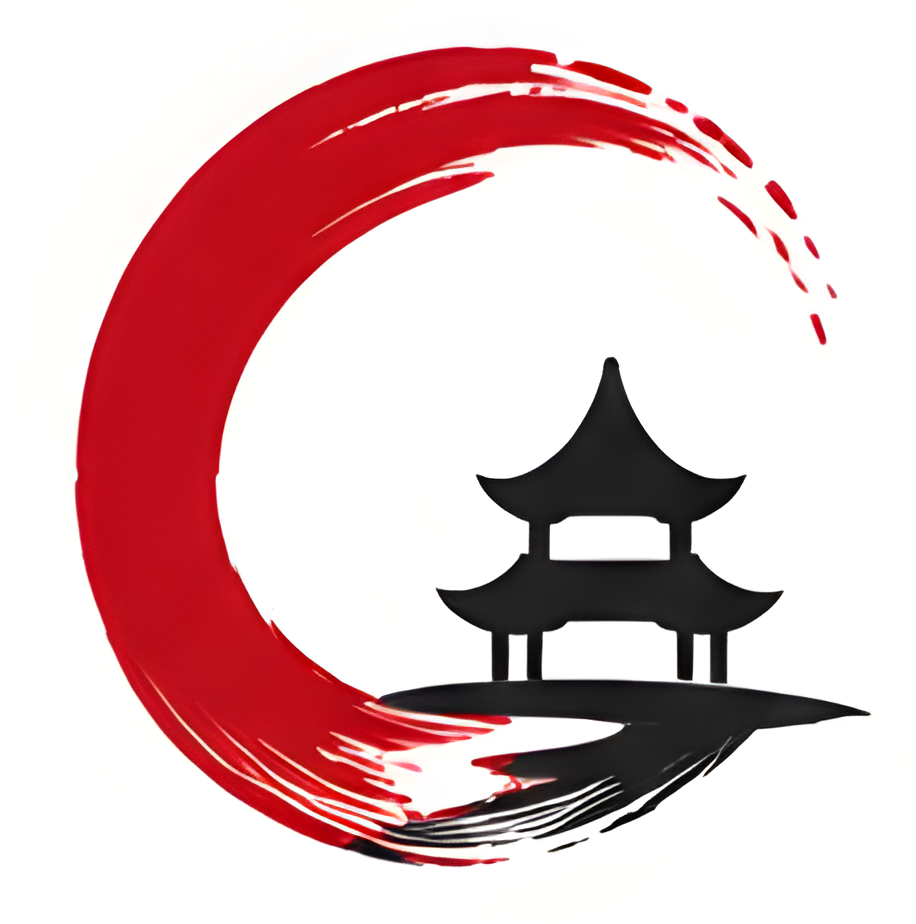
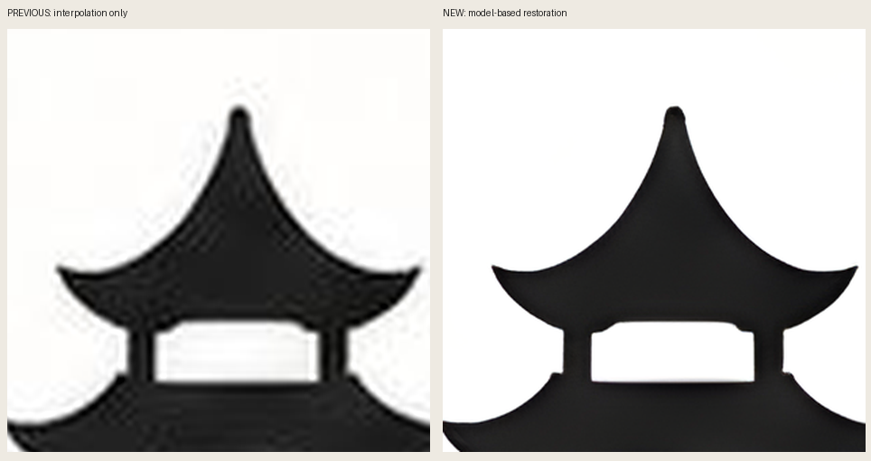
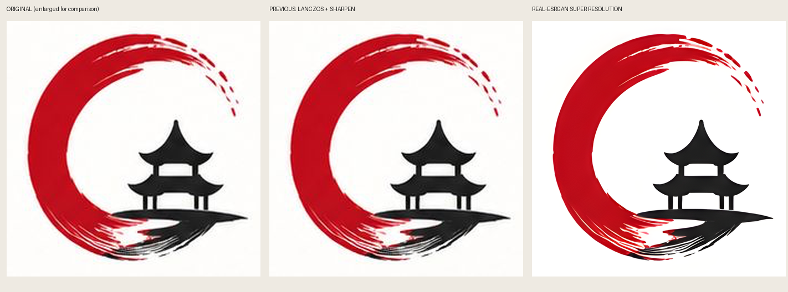

Yalnız büyütme değil: süper çözünürlük.
Real-ESRGAN modeliyle gürültü/artefakt azaltma ve kenar-detay iyileştirmesi uygulandı. Yeni PNG ayrı bir kalite adayıdır; kilitli orijinal değişmedi. Tipografi çalışması yok.
Yeni: kullanıcı tarafından onaylanan kilitli sembol SVG'si.
Bu PNG'den gerçek vektör yolları çıkarıldı. Kaynak ↔ SVG karşılaştırmasını aç / SVG'yi indir. SVG sembolü kilitlidir; hedef raster kilidi de değişmedi. PR merge/yayın kapısı ayrıdır.
Bu PNG'den gerçek vektör yolları çıkarıldı. Kaynak ↔ SVG karşılaştırmasını aç / SVG'yi indir. SVG sembolü kilitlidir; hedef raster kilidi de değişmedi. PR merge/yayın kapısı ayrıdır.


Önceki yöntemle fark — aynı detay, aynı ölçek

Tam işaret karşılaştırması

Detay tahmini, onay bekliyor.
Model belirsiz ayrıntıları tahmin eder; ince fırça dokusu bir miktar yumuşayabilir ve kenarlarda küçük değişiklikler olabilir. Sonuç birebir kaynak-detay garantisi değildir; yeni hedef veya onaylı üretim logosu olarak kilitlenmedi.
Model belirsiz ayrıntıları tahmin eder; ince fırça dokusu bir miktar yumuşayabilir ve kenarlarda küçük değişiklikler olabilir. Sonuç birebir kaynak-detay garantisi değildir; yeni hedef veya onaylı üretim logosu olarak kilitlenmedi.
Önceki büyütme
6× LANCZOS PNG — yalnız interpolasyon ve hafif netleştirme; yeni süper çözünürlükten farklıdır.